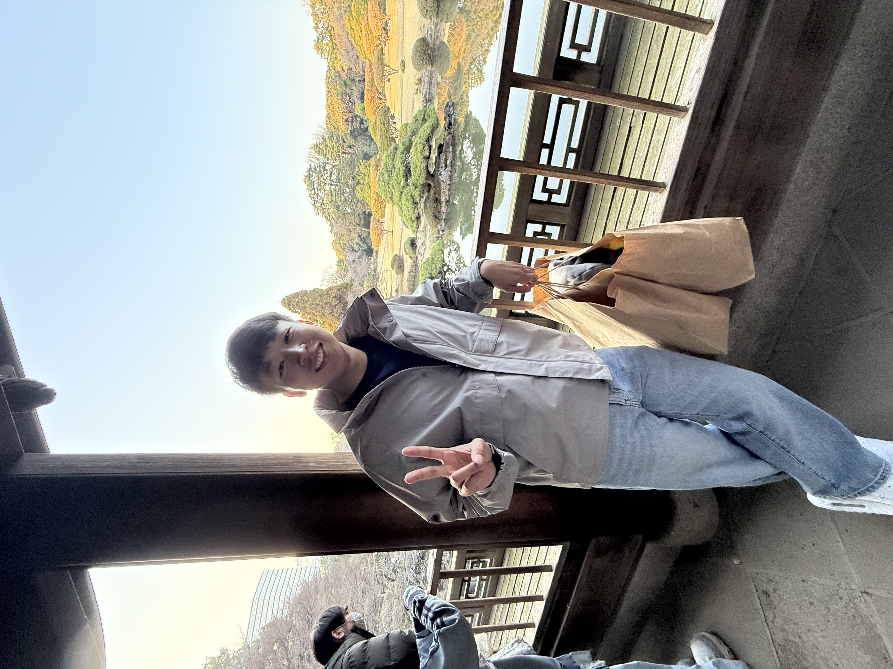

Jimming He
Hi! I'm a junior researcher with interests in multimodal alignment and generative modeling. I'm planning to apply for PhD programs starting in Fall 2026, and in the meantime, I'm actively seeking opportunities for visiting research positions or industry residencies to further deepen my experience.
I graduated with my Master's and Bachelor's degrees in Computer Science from Stanford University in 2024. I was briefly involved in the Stanford Vision & Learning Lab led by Prof. Fei-Fei Li. In the past, I've interned at Meta AI, NVIDIA, Facebook, AFRL, Cleanlab, and Coursera.
I'm also interested in startups. I recently co-founded a company to build AI tools that automate and simplify GPU development. If you are experienced in compilers, parallel computing, or software/hardware co-design, please reach out.
Email /
LinkedIn /
Google Scholar
|

|
News
- 03/25 : Received funding from LeapYear to work on an exciting project, alongside my friends William, Shafin, and Nathan!
- 12/24 : Graduated with a MS in Computer Science from Stanford University!
- 12/24 : Completed an internship at NVIDIA, where I researched LLMs for in-car applications.
- 09/24 : My first paper was accepted to NeurIPS'24!
- 09/24 : Completed an internship at Meta AI, where I developed safety classifiers for Llama 3 models.
- 06/24 : Graduated with a BS in Computer Science from Stanford University!
- 04/24 : Completed an internship at Cleanlab, where I showcased data curation tools for more reliable RAG and LLM fine-tuning.
- 04/24 : I'm a University Founder Fellow at Unusual Ventures!
|
Publications(*) = Equal contribution
|
|
HourVideo: 1-Hour Video-Language Understanding
Keshigeyan Chandrasegaran, Agrim Gupta, Lea M. Hadzic, Taran Kota, Jimming He, Cristobal Eyzaguirre, Zane Durante, Manling Li, Jiajun Wu, Li Fei-Fei
NeurIPS Datasets and Benchmarks, 2024.
arXiv
/ project
/ teaser
/ code
/ openreview
/ poster
/ dataset
|
Projects
|
|
How to detect bad data in your instruction tuning dataset for better LLM fine-tuning
Jimming He, Sanjana Garg, Jonas Mueller
Automatically catch low-quality responses, incomplete/vague prompts, and other problematic text (toxic language, PII, informal writing, bad grammar/spelling) lurking in any instruction-response dataset.
blog /
tutorial /
code
|
|